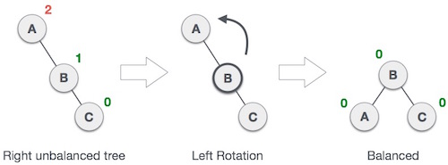
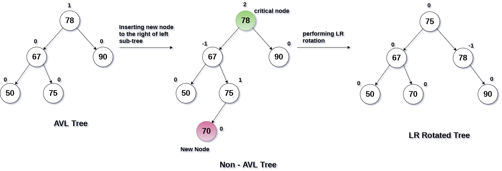

What are AVL Trees?
AVL tree is a self-balancing Binary Search Tree (BST) where the difference between heights of left and right subtrees cannot be more than one for all nodes.
What is the use of AVL trees?
Most of the BST operations (e.g., search, max, min, insert, delete.. etc) take O(h) time where h is the height of the BST. The cost of these operations may become O(n) for a skewed Binary tree. If we make sure that height of the tree remains O(Logn) after every insertion and deletion, then we can guarantee an upper bound of O(Logn) for all these operations. The height of an AVL tree is always O(Logn) where n is the number of nodes in the tree.
AVL Trees Insertion
To make sure that the given tree remains AVL after every insertion, we must augment the standard BST insert operation to perform some re-balancing. Following are two basic operations that can be performed to re-balance a BST without violating the BST property (keys(left) < key(root) < keys(right)).
1) Left Rotation
2) Right Rotation
Steps to follow for insertion
Let the newly inserted node be w
1) Perform standard BST insert for w.
2) Starting from w, travel up and find the first unbalanced node.
Let z be the first unbalanced node, y be the child of z that comes on the path from w to z and x be the grandchild of z that comes on the path from w to z.
3) Re-balance the tree by performing appropriate rotations on the subtree rooted with z.
There can be 4 possible cases that needs to be handled as x, y and z can be arranged in 4 ways. Following are the possible 4 arrangements:
a) y is left child of z and x is left child of y (Left Left Case)
b) y is left child of z and x is right child of y (Left Right Case)
c) y is right child of z and x is right child of y (Right Right Case)
d) y is right child of z and x is left child of y (Right Left Case)
Following are the operations to be performed in above mentioned 4 cases.
In all of the cases, we only need to re-balance the subtree rooted with z and the complete tree becomes balanced as the height of subtree (After appropriate rotations) rooted with z becomes same as it was before insertion
Left Left Case

Right Right Case

Left Right Case

Right Left Case